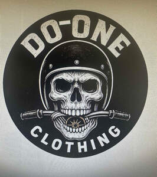

Trade Mark Journal No.2025/025 20 June 2025
UK00004213682 4 June 2025 (24,25,26,35,39,40,42)

- Class 24
- Textiles for making articles of clothing.
- Class 25
- Clothing; Men's clothing; Jerseys [clothing]; Jackets [clothing]; Denims [clothing]; Knitwear [clothing]; Jackets (Stuff -) [clothing]; Stuff jackets [clothing]; Woolen clothing; Foulards [clothing articles]; Ready-to-wear clothing; Parts of clothing, footwear and headgear; Plush clothing; Jackets being sports clothing; Ready-made clothing; Garments for protecting clothing; Shorts [clothing]; Embroidered clothing; Knitted clothing; Gloves [clothing]; Gloves as clothing; Leather clothing; Clothing of leather; Leather (Clothing of -); Windproof clothing; Tops [clothing]; Collars [clothing]; Rainproof clothing; Gloves for apparel; Bottoms [clothing]; Women's clothing; Linen clothing; Casual clothing; Woven clothing; Quilted jackets [clothing]; Clothing for leisure wear; Veils [clothing]; Trunks being clothing; Hoods [clothing].
- Class 26
- Brooches [clothing accessories]; Brooches for clothing; Buckles [clothing accessories]; Trimmings for clothing; Buttons for clothing; Accessories for apparel, sewing articles and decorative textile articles.
- Class 35
- Inventorying merchandise; Retail services connected with the sale of clothing and clothing accessories; Retail services in relation to clothing accessories; Display services for merchandise; Online retail store services relating to clothing; Mail order retail services for clothing accessories; Retail services relating to clothing; Online retail store services in relation to clothing; Wholesale services relating to clothing; Online retail services relating to clothing; Retail store services in the field of clothing; Wholesale services in relation to clothing; Promoting the sale of fashion goods through promotional articles in magazines; Retail services in relation to clothing.
- Class 39
- Collection of merchandise; Merchandise (Packing of -); Packing of merchandise; Wrapping of merchandise; Packaging clothing articles for transportation; Transportation of clothing.
- Class 40
- Shrinking of items of clothing; Pre-shrinking of items of clothing; Monogramming of clothing; Recycling of clothing; Clothing (hot-pressing of -) [forming of clothing]; Clothing alteration; Alteration (Clothing -).
- Class 42
- Design of clothing, footwear and headgear; Design of clothing accessories; Designing of clothing; Design of clothing.
alan sands